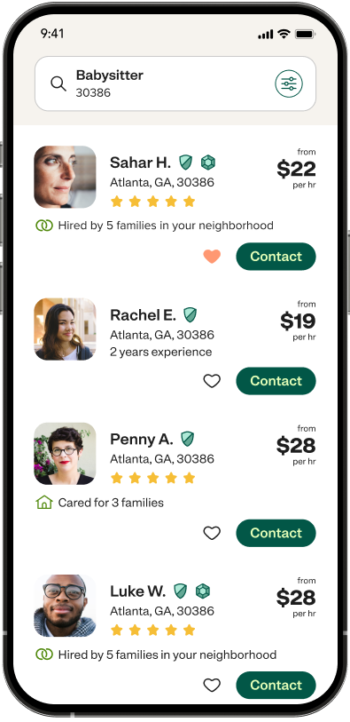

Child care
Babysitters, nannies and after-school helpers your kids will love.
Find child careKindra connects your family with vetted, local helpers — for the little ones, the elders, the pets and the home you love.
Whatever your household needs today — and whatever it needs next — a single Kindra account keeps your trusted helpers close.
Babysitters, nannies and after-school helpers your kids will love.
Find child careCompanionship and daily support for the people who raised us.
Find senior carePersonal assistance and respite help, arranged with real dignity.
Find adult careCleaners who show up, sweat the details and leave home sparkling.
Find housekeepingWalkers, sitters and groomers who treat your pet like family.
Find pet carePatient tutors who turn “I can’t” into “just watch me.”
Find tutoringPick a type of care and your neighbourhood. The whole thing takes about a minute.
Compare verified profiles, read honest reviews and message the helpers you like best.
Interview, agree on the details and pay securely — every step kept in one place.
Trust isn’t a feature you add later. It runs through every profile, message and booking on Kindra.
Every caregiver confirms who they are before they ever appear in your search.
Honest ratings from real families — never edited, never bought.
Keep conversations and payments safely inside Kindra from first hello to last.
A real support team is a tap away, whenever you need a hand.

Message caregivers, manage bookings and handle payments from your pocket. The whole family’s care, in one calm little app.

“I found a weekend nanny in two days flat. The reviews made the choice feel easy.”

“Kindra helped us arrange companionship for my dad. The relief for our family was instant.”
“Our dog adores her walker. I finally stopped worrying during the long shifts.”
Set your own rates, choose the hours that fit your life and find families nearby who need exactly what you offer.
Everything you need to feel sure before your first booking.
Join Kindra free and meet caring, vetted helpers in your neighbourhood today — for whatever this season of life brings.